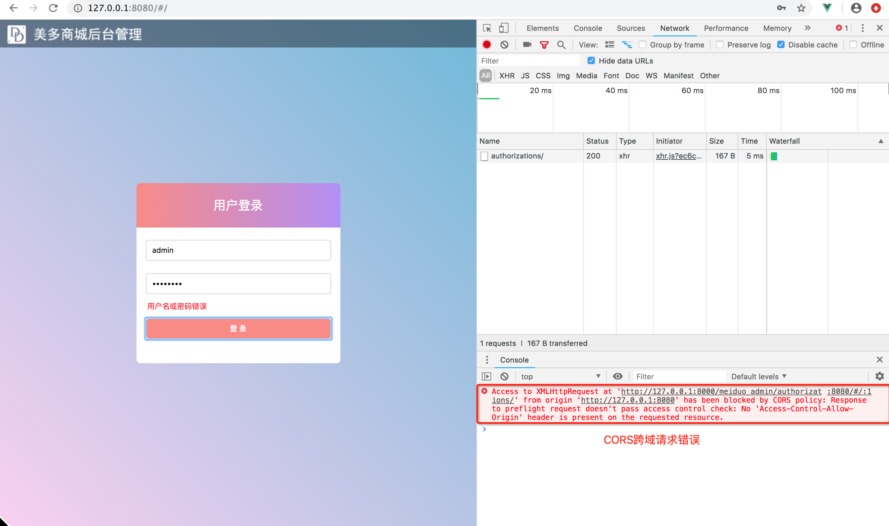

CORS跨域请求
本小节目标：
- 理解跨域请求的概念以及浏览器CORS跨域请求限制
- 掌握使用corsheaders扩展包进行跨域请求设置
CORS跨域
通过前端html界面点击登录按钮之后，浏览器产生了如下错误，这就是CORS跨域请求错误。

1. 跨域请求
1）同源地址
对于两个不同的url地址，如果其协议、域名和PORT完全一致，这样的地址就叫同源地址，否则就叫非同源地址。
例如：
1. http://127.0.0.1:8080/
2. http://127.0.0.1:8000/
2）跨域请求
当浏览器发起请求时，如果源请求页面地址和被请求地址不是同源地址，那么这个请求就是跨域请求。
3）CORS跨域请求限制
浏览器在发起ajax跨域请求时，默认会有CORS跨域请求限制。
浏览器在请求头中携带Origin请求头，表明源请求地址：
Origin: 源请求地址
服务器在返回响应时，如果允许源地址对其进行跨域请求，需要在响应头中携带Access-Control-Allow-Origin响应头：
Access-Control-Allow-Origin: 源请求地址
浏览器在收到响应时，如果发现响应头中没有Access-Control-Allow-Origin响应头，浏览器会直接将请求驳回，产生CORS跨域请求限制。
2. CORS跨域请求设置
项目中前端服务器与后端服务器分处不同的域名，需要为后端服务器添加跨域访问的支持。
Django项目中可以使用django-cors-headers扩展进行跨域请求设置。
1）安装
pip install django-cors-headers
2）注册应用
INSTALLED_APPS = (
...
'corsheaders',
...
)
3）注册中间件
MIDDLEWARE = [
# 注意：此中间件添加到中间件的第一个
'corsheaders.middleware.CorsMiddleware',
...
]
4）添加跨域请求白名单
# CORS跨域请求设置
CORS_ORIGIN_WHITELIST = (
# 备注：允许源地址`http://127.0.0.1:8080`向当前API服务器发起跨域请求
'http://127.0.0.1:8080',
)
CORS_ALLOW_CREDENTIALS = True # 允许携带cookie
- 凡是出现在白名单中的域名，都可以访问后端接口
- CORS_ALLOW_CREDENTIALS 指明在跨域访问中，后端是否支持对cookie的操作。
总结：
- 同源地址：协议、域名和端口完整相同的地址为同源地址
- 跨域请求：客户端发起请求时，如果源请求地址和被请求地址不同源，则请求就是跨域请求
- CORS跨域请求限制：浏览器针对ajax异步请求，会有CORS跨域请求限制
- Origin
- Access-Control-Allow-Origin
- CORS请求扩展包
- 设置跨域请求白名单